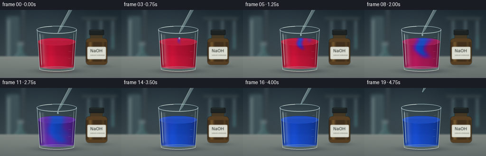
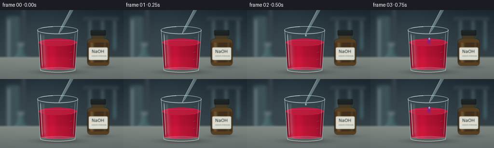

CODING AGENTS AS PIXEL WORLD MODELS
traex/GPT-6.1-Sol · material_0031
点击播放 · 原生 RGB 像素
逐轮保存的候选
回放视频、检查图与代码变化。
每份候选均可单独播放。实际图片检查记录在下方工具轨迹中。
候选 01播放与检查图
点击播放 · 原生 RGB 像素


展开代码变化
--- 上一保存版本
+++ 本次保存版本
@@ -0,0 +1,219 @@
+"""Procedural supersampled laboratory timelapse. No external assets."""
+from pathlib import Path
+import numpy as np
+from PIL import Image, ImageDraw, ImageFont, ImageFilter
+import artifact_io
+
+ROOT = Path(__file__).resolve().parent
+S = 4
+W,H = 256*S,144*S
+Y,X = np.mgrid[0:H,0:W].astype(np.float32)/S
+rng = np.random.default_rng(731)
+
+def smooth(x):
+ q=np.clip(x,0,1)
+ return q*q*(3-2*q)
+
+def blend(a,c,m):
+ m=np.clip(m,0,1)[...,None]
+ return a*(1-m)+np.asarray(c)*m
+
+def ellipse(draw,box,fill,outline=None,width=1):
+ draw.ellipse(tuple(int(v*S) for v in box),fill=fill,outline=outline,width=int(width*S))
+def line(draw,xy,fill,width=1):
+ draw.line([(int(x*S),int(y*S)) for x,y in xy],fill=fill,width=max(1,int(width*S)))
+def poly(draw,xy,fill):
+ draw.polygon([(int(x*S),int(y*S)) for x,y in xy],fill=fill)
+def rect(draw,box,fill,r=0):
+ draw.rounded_rectangle(tuple(int(v*S) for v in box),radius=int(r*S),fill=fill)
+
+# Softly defocused laboratory and a cool, solid work surface.
+base = np.zeros((H,W,3),np.float32)
+v = Y/144
+for k,(a,b) in enumerate([(27,62),(39,76),(47,79)]): base[:,:,k]=a+(b-a)*v
+illum = np.exp(-((X-88)/92)**2-((Y-43)/71)**2)
+base += illum[...,None]*np.array([14,16,17])
+bg=Image.fromarray(np.uint8(np.clip(base,0,255)))
+d=ImageDraw.Draw(bg)
+rect(d,(13,13,41,106),(61,81,87),4)
+rect(d,(16,20,20,101),(113,132,134),2)
+rect(d,(46,-8,52,99),(57,69,74),1)
+# Flask in the background.
+poly(d,[(39,73),(47,73),(49,91),(66,108),(64,118),(23,118),(22,109),(37,90)],(69,99,102))
+poly(d,[(32,103),(57,103),(64,112),(60,116),(26,116),(25,112)],(56,88,91))
+line(d,[(39,74),(38,90),(25,109),(27,115)],(144,164,160),1)
+rect(d,(36,68,50,75),(99,116,118),1)
+# Shadowy distant rack.
+rect(d,(172,15,246,20),(54,67,70),1)
+for xx in [184,210,235]:
+ rect(d,(xx,22,xx+5,83),(73,93,98),2)
+ rect(d,(xx+1,55,xx+4,82),(66,112,116),1)
+bg=bg.filter(ImageFilter.GaussianBlur(3*S))
+a=np.asarray(bg).astype(np.float32)
+table=smooth((Y-95)/6)
+t=np.zeros_like(a)
+for k,(v0,v1) in enumerate([(127,97),(134,106),(129,104)]):
+ t[:,:,k]=v0+(v1-v0)*np.clip((Y-98)/46,0,1)
+t += np.exp(-((X-85)/140)**2)[...,None]*6
+noise = rng.normal(0,0.45,(H,W,1))
+a=blend(a,t+noise,table)
+# Fine horizontal worktop grain; broad natural shadows.
+a-=np.exp(-((Y-105)/1.1)**2)[...,None]*2.2
+shadow=np.exp(-((X-123)/49)**2-((Y-129)/5.0)**2)*.51
+a=blend(a,[42,55,56],shadow)
+a=blend(a,[48,57,55],np.exp(-((X-204)/25)**2-((Y-119)/3.8)**2)*.36)
+background=Image.fromarray(np.uint8(np.clip(a,0,255)))
+
+# Bottle, behind and slightly out of focus. The label identifies the clear reagent.
+bottle=Image.new('RGBA',(W,H),(0,0,0,0)); d=ImageDraw.Draw(bottle)
+rect(d,(190,47,216,62),(69,57,37),3)
+rect(d,(181,60,226,116),(86,63,34),7)
+# Amber body highlights and curvature.
+for i in range(44):
+ xx=181+i
+ light=np.exp(-((i-9)/4.0)**2)*50+np.exp(-((i-36)/2.2)**2)*21
+ col=(int(63+light),int(47+.74*light),int(28+.35*light),255)
+ line(d,[(xx,68),(xx,109)],col,1)
+rect(d,(184,78,223,104),(219,221,210,255),2)
+font=ImageFont.truetype('/usr/share/fonts/truetype/dejavu/DejaVuSans.ttf',9*S)
+small=ImageFont.truetype('/usr/share/fonts/truetype/dejavu/DejaVuSans.ttf',3*S)
+d.text((190*S,81*S),'NaOH',font=font,fill=(37,44,40,255))
+d.text((190*S,94*S),'SODIUM HYDROXIDE',font=small,fill=(83,87,78,255))
+rect(d,(188,42,219,53),(23,29,30,255),2)
+for xx in np.arange(189,219,2): line(d,[(xx,44),(xx,51)],(49,56,53,255),.55)
+line(d,[(190,43),(215,43)],(78,85,78,255),.65)
+background=Image.alpha_composite(background.convert('RGBA'),bottle.filter(ImageFilter.GaussianBlur(.55*S))).convert('RGB')
+BG=np.asarray(background).astype(np.float32)
+
+cx=119.5
+# Tapered cylinder: rim at 42, heavy glass foot at 127.
+radius=41.7 - np.clip((Y-42)/85,0,1)*5.3
+u=(X-cx)/radius
+inside=(np.abs(u)<1)&(Y>=42)&(Y<=126)
+edge=np.sqrt(np.clip(1-u*u,0,1))
+liquid_surface=67-8.0*edge
+liquid_bottom=120+5.0*edge
+lm=smooth((Y-liquid_surface)/.4)*smooth((liquid_bottom-Y)/.7)*(np.abs(u)<.981)
+
+# Fixed sensor-like texture instead of flickering noise.
+gr=rng.normal(0,.24,(H,W,1))
+
+def concentration(frame):
+ t=frame
+ globalmix=.96*smooth((t-4.8)/11.0)
+ depth=np.maximum(Y-64,0)
+ # Two progressively widening curls sink from the point of addition.
+ age=max(t-2,0)
+ front=age*5.6
+ width=2.8+age*1.14
+ center=121 + 9*np.sin(depth*.105-age*.46)*(1-np.exp(-depth/13))
+ plume=np.exp(-((X-center)/width)**2)*smooth((front-depth+9)/17)
+ curl=np.exp(-((X-(128+12*np.sin(depth*.087+age*.45)))/(width*.9+1))**2)*smooth((front-depth-5)/16)
+ strength=smooth((t-1.5)/3)
+ z=np.clip(globalmix + (1-globalmix)*strength*(.87*plume+.40*curl),0,1)
+ z=np.maximum(z,smooth((t-12)/6)*.995)
+ return z
+
+def liquid_rgb(c):
+ red=np.array([197.,15.,51.]); purple=np.array([108.,24.,154.]); blue=np.array([18.,70.,199.])
+ p=smooth(c/.54)[...,None]
+ q=smooth((c-.40)/.60)[...,None]
+ out=red*(1-p)+purple*p
+ return out*(1-q)+blue*q
+
+frames=[]
+for frame in range(20):
+ a=BG.copy()
+ # Glass air cavity has subtle transmission and refraction.
+ ii=inside.astype(float)
+ a=blend(a,a*.94+np.array([9,13,14]),ii*.38)
+ # liquid's transmitted colour and cylindrical absorption.
+ c=concentration(frame)
+ rgb=liquid_rgb(c)
+ optical=.54+.42*edge
+ glow=np.exp(-((u+.37)/.28)**2)*.15
+ vertical=.89+.13*np.clip((Y-68)/53,0,1)
+ col=rgb*(optical*vertical+glow)[...,None]
+ # Warm backlit edge, caustic at the base, and broad studio reflection.
+ col+=np.exp(-((u+.68)/.13)**2)[...,None]*np.array([24,22,22])
+ col+=np.exp(-((Y-liquid_bottom+2)/1.55)**2)[...,None]*np.array([22,21,23])
+ a=blend(a,col,lm*.95)
+ # Surface is a foreshortened ellipse. Keep same local conversion in the meniscus.
+ surfmask=np.clip(1-((X-cx)/40.7)**2-((Y-67)/8)**2,0,1)
+ topc=concentration(frame)
+ surfcol=liquid_rgb(topc)*.89+np.array([16,17,18])
+ surfcol+=np.exp(-((Y-63.1)/.8)**2)[...,None]*np.array([13,15,20])
+ a=blend(a,surfcol,smooth(surfmask*12)*.78)
+ # Liquid's front meniscus catches the studio strip light.
+ meniscus=67+8*edge
+ mm=np.exp(-((Y-meniscus)/.28)**2)*(np.abs(u)<.973)
+ a=blend(a,liquid_rgb(c)*1.1+np.array([18,19,23]),mm*.48)
+ # Real clear glass has bright narrow edges and dark adjacent refraction.
+ sides=np.exp(-((np.abs(u)-.984)/.012)**2)*inside
+ a=blend(a,[192,214,211],sides*.58)
+ darkside=np.exp(-((np.abs(u)-.94)/.014)**2)*inside
+ a=blend(a,[28,48,55],darkside*.26)
+ shine=np.exp(-((u+.865)/.022)**2)*smooth((Y-47)/7)*smooth((122-Y)/9)*inside
+ a=blend(a,[225,239,230],shine*.67)
+ broad=np.exp(-((u+.73)/.06)**2)*smooth((Y-49)/6)*smooth((119-Y)/9)*inside
+ a=blend(a,[207,222,221],broad*.15)
+ rightshine=np.exp(-((u-.875)/.016)**2)*smooth((Y-44)/9)*smooth((122-Y)/9)*inside
+ a=blend(a,[206,224,217],rightshine*.43)
+ # Soft reflection on the tabletop, barely visible beneath the foot.
+ reflect=np.exp(-((X-cx)/34)**4-((Y-131)/2.2)**2)*.13
+ a=blend(a,liquid_rgb(np.full((H,W),frame/19))*.6,reflect)
+ im=Image.fromarray(np.uint8(np.clip(a+gr,0,255))).convert('RGBA')
+ glass=Image.new('RGBA',(W,H),(0,0,0,0)); d=ImageDraw.Draw(glass)
+ # Back half of the open rim, elliptical thickness.
+ d.arc((int(77.1*S),int(33.8*S),int(161.9*S),int(50.2*S)),180,360,fill=(183,208,207,220),width=1*S)
+ d.arc((int(79.0*S),int(35.4*S),int(160.0*S),int(49.0*S)),180,360,fill=(44,68,73,230),width=int(.6*S))
+ # Front rim bright line and a second internal contour.
+ d.arc((int(77.1*S),int(33.8*S),int(161.9*S),int(50.2*S)),0,180,fill=(210,231,225,240),width=int(1.05*S))
+ d.arc((int(79*S),int(35.7*S),int(160*S),int(48.5*S)),0,180,fill=(127,158,161,155),width=int(.6*S))
+ line(d,[(77.5,42),(83.3,124)],(181,211,211,180),.6)
+ line(d,[(161.5,42),(155.8,124)],(154,187,191,150),.65)
+ ellipse(d,(83,119.5,156,130),(101,129,133,65),(177,201,197,180),.65)
+ d.arc((83*S,int(119.5*S),156*S,130*S),0,180,fill=(225,231,218,220),width=int(1.2*S))
+ d.arc((87*S,121*S,152*S,127*S),0,180,fill=(42,67,70,165),width=int(.8*S))
+ # Clear, localized specular gleams on the rim and bottom.
+ d.arc((77*S,34*S,162*S,50*S),212,256,fill=(240,250,241,230),width=int(1.2*S))
+ d.arc((83*S,120*S,156*S,130*S),45,120,fill=(239,243,225,210),width=S)
+ # Very faint volume graduations; these remain unobtrusive on clear glass.
+ for yy in [58,73,88,103]:
+ xx=152-(yy-42)*.052
+ line(d,[(xx-5,yy),(xx,yy-.4)],(228,237,228,110),.45)
+ im=Image.alpha_composite(im,glass)
+ # A clear glass dropper enters from the top. Retreat after dispensing.
+ lift = 0 if frame<14 else smooth((frame-14)/5)*40
+ sx,sy=158.,-18.-lift
+ tx,ty=122.,49.-lift
+ vx,vy=tx-sx,ty-sy
+ L=(vx*vx+vy*vy)**.5; nx,ny=-vy/L,vx/L
+ def p(q,w): return (sx+vx*q+nx*w,sy+vy*q+ny*w)
+ pip=Image.new('RGBA',(W,H),(0,0,0,0)); d=ImageDraw.Draw(pip)
+ poly(d,[p(.15,3.4),p(.86,2.5),p(1,.8),p(1,-.8),p(.86,-2.5),p(.15,-3.4)],(166,195,194,100))
+ line(d,[p(.17,2.8),p(.85,2.1),p(1,.55)],(220,239,232,220),.65)
+ line(d,[p(.17,-2.8),p(.85,-2.1),p(1,-.55)],(98,138,144,225),.65)
+ line(d,[p(.23,.35),p(.86,.35)],(230,242,233,165),.45)
+ line(d,[p(.37,-1),p(.86,-1),p(.98,0)],(173,204,204,130),.6)
+ # Black rubber bulb, cropped naturally by the frame edge.
+ poly(d,[p(-.1,6),p(.19,5),p(.24,3.2),p(.24,-3.2),p(.19,-5),p(-.1,-6)],(25,33,34,255))
+ line(d,[p(0,3.6),p(.16,3.6)],(78,90,87,230),1.5)
+ # Water droplets: repeated addition across the accelerated sequence.
+ if 2<=frame<=13:
+ phase=(frame-2)%3
+ if phase in (0,1):
+ dy=ty+4+(phase*7)
+ ellipse(d,(tx-1.65,dy-2.1,tx+1.65,dy+2.2),(167,206,210,150),(221,243,238,215),.45)
+ ellipse(d,(tx-.8,dy-1.45,tx-.12,dy-.4),(249,254,245,235))
+ if phase==2:
+ # Delicate concentric meniscus rings following a droplet impact.
+ rad=5+(frame-2)/5
+ color=tuple(int(x) for x in liquid_rgb(np.array(min(1,frame/15)))*1.15)
+ ellipse(d,(tx-rad,66-rad*.24,tx+rad,66+rad*.24),None,(*np.clip(color,0,255),135),.4)
+ ellipse(d,(tx-rad*1.7,66-rad*.40,tx+rad*1.7,66+rad*.40),None,(182,195,205,65),.35)
+ im=Image.alpha_composite(im,pip).convert('RGB')
+ im=im.resize((256,144),Image.Resampling.LANCZOS)
+ frames.append(np.asarray(im,dtype=np.uint8))
+artifact_io.save(np.stack(frames),ROOT)
+print('Saved 20 RGB frames, pixels.npz, index.html, and inspection sheets.')
可观测工具轨迹
实际执行的命令与返回图片。
命令 1exit 0
/bin/bash -lc "ls -la && cat prompt.txt && printf '\\n---RULES---\\n' && cat GENERATION_RULES.md && printf '\\n---SPEC---\\n' && cat task_spec.json"
命令 2exit 0
/bin/bash -lc 'cat artifact_io.py'
命令 3exit 0
/bin/bash -lc "fc-list | head -8 && python - <<'PY'
import numpy, PIL
print('ready')
PY"命令 4exit 0
/bin/bash -lc "cat > generate.py <<'PY'
\"\"\"Procedural supersampled laboratory timelapse. No external assets.\"\"\"
from pathlib import Path
import numpy as np
from PIL import Image, ImageDraw, ImageFont, ImageFilter
import artifact_io
ROOT = Path(__file__).resolve().parent
S = 4
W,H = 256*S,144*S
Y,X = np.mgrid[0:H,0:W].astype(np.float32)/S
rng = np.random.default_rng(731)
def smooth(x):
q=np.clip(x,0,1)
return q*q*(3-2*q)
def blend(a,c,m):
m=np.clip(m,0,1)[...,None]
return a*(1-m)+np.asarray(c)*m
def ellipse(draw,box,fill,outline=None,width=1):
draw.ellipse(tuple(int(v*S) for v in box),fill=fill,outline=outline,width=int(width*S))
def line(draw,xy,fill,width=1):
draw.line([(int(x*S),int(y*S)) for x,y in xy],fill=fill,width=max(1,int(width*S)))
def poly(draw,xy,fill):
draw.polygon([(int(x*S),int(y*S)) for x,y in xy],fill=fill)
def rect(draw,box,fill,r=0):
draw.rounded_rectangle(tuple(int(v*S) for v in box),radius=int(r*S),fill=fill)
# Softly defocused laboratory and a cool, solid work surface.
base = np.zeros((H,W,3),np.float32)
v = Y/144
for k,(a,b) in enumerate([(27,62),(39,76),(47,79)]): base[:,:,k]=a+(b-a)*v
illum = np.exp(-((X-88)/92)**2-((Y-43)/71)**2)
base += illum[...,None]*np.array([14,16,17])
bg=Image.fromarray(np.uint8(np.clip(base,0,255)))
d=ImageDraw.Draw(bg)
rect(d,(13,13,41,106),(61,81,87),4)
rect(d,(16,20,20,101),(113,132,134),2)
rect(d,(46,-8,52,99),(57,69,74),1)
# Flask in the background.
poly(d,[(39,73),(47,73),(49,91),(66,108),(64,118),(23,118),(22,109),(37,90)],(69,99,102))
poly(d,[(32,103),(57,103),(64,112),(60,116),(26,116),(25,112)],(56,88,91))
line(d,[(39,74),(38,90),(25,109),(27,115)],(144,164,160),1)
rect(d,(36,68,50,75),(99,116,118),1)
# Shadowy distant rack.
rect(d,(172,15,246,20),(54,67,70),1)
for xx in [184,210,235]:
rect(d,(xx,22,xx+5,83),(73,93,98),2)
rect(d,(xx+1,55,xx+4,82),(66,112,116),1)
bg=bg.filter(ImageFilter.GaussianBlur(3*S))
a=np.asarray(bg).astype(np.float32)
table=smooth((Y-95)/6)
t=np.zeros_like(a)
for k,(v0,v1) in enumerate([(127,97),(134,106),(129,104)]):
t[:,:,k]=v0+(v1-v0)*np.clip((Y-98)/46,0,1)
t += np.exp(-((X-85)/140)**2)[...,None]*6
noise = rng.normal(0,0.45,(H,W,1))
a=blend(a,t+noise,table)
# Fine horizontal worktop grain; broad natural shadows.
a-=np.exp(-((Y-105)/1.1)**2)[...,None]*2.2
shadow=np.exp(-((X-123)/49)**2-((Y-129)/5.0)**2)*.51
a=blend(a,[42,55,56],shadow)
a=blend(a,[48,57,55],np.exp(-((X-204)/25)**2-((Y-119)/3.8)**2)*.36)
background=Image.fromarray(np.uint8(np.clip(a,0,255)))
# Bottle, behind and slightly out of focus. The label identifies the clear reagent.
bottle=Image.new('RGBA',(W,H),(0,0,0,0)); d=ImageDraw.Draw(bottle)
rect(d,(190,47,216,62),(69,57,37),3)
rect(d,(181,60,226,116),(86,63,34),7)
# Amber body highlights and curvature.
for i in range(44):
xx=181+i
light=np.exp(-((i-9)/4.0)**2)*50+np.exp(-((i-36)/2.2)**2)*21
col=(int(63+light),int(47+.74*light),int(28+.35*light),255)
line(d,[(xx,68),(xx,109)],col,1)
rect(d,(184,78,223,104),(219,221,210,255),2)
font=ImageFont.truetype('/usr/share/fonts/truetype/dejavu/DejaVuSans.ttf',9*S)
small=ImageFont.truetype('/usr/share/fonts/truetype/dejavu/DejaVuSans.ttf',3*S)
d.text((190*S,81*S),'NaOH',font=font,fill=(37,44,40,255))
d.text((190*S,94*S),'SODIUM HYDROXIDE',font=small,fill=(83,87,78,255))
rect(d,(188,42,219,53),(23,29,30,255),2)
for xx in np.arange(189,219,2): line(d,[(xx,44),(xx,51)],(49,56,53,255),.55)
line(d,[(190,43),(215,43)],(78,85,78,255),.65)
background=Image.alpha_composite(background.convert('RGBA'),bottle.filter(ImageFilter.GaussianBlur(.55*S))).convert('RGB')
BG=np.asarray(background).astype(np.float32)
cx=119.5
# Tapered cylinder: rim at 42, heavy glass foot at 127.
radius=41.7 - np.clip((Y-42)/85,0,1)*5.3
u=(X-cx)/radius
inside=(np.abs(u)<1)&(Y>=42)&(Y<=126)
edge=np.sqrt(np.clip(1-u*u,0,1))
liquid_surface=67-8.0*edge
liquid_bottom=120+5.0*edge
lm=smooth((Y-liquid_surface)/.4)*smooth((liquid_bottom-Y)/.7)*(np.abs(u)<.981)
# Fixed sensor-like texture instead of flickering noise.
gr=rng.normal(0,.24,(H,W,1))
def concentration(frame):
t=frame
globalmix=.96*smooth((t-4.8)/11.0)
depth=np.maximum(Y-64,0)
# Two progressively widening curls sink from the point of addition.
age=max(t-2,0)
front=age*5.6
width=2.8+age*1.14
center=121 + 9*np.sin(depth*.105-age*.46)*(1-np.exp(-depth/13))
plume=np.exp(-((X-center)/width)**2)*smooth((front-depth+9)/17)
curl=np.exp(-((X-(128+12*np.sin(depth*.087+age*.45)))/(width*.9+1))**2)*smooth((front-depth-5)/16)
strength=smooth((t-1.5)/3)
z=np.clip(globalmix + (1-globalmix)*strength*(.87*plume+.40*curl),0,1)
z=np.maximum(z,smooth((t-12)/6)*.995)
return z
def liquid_rgb(c):
red=np.array([197.,15.,51.]); purple=np.array([108.,24.,154.]); blue=np.array([18.,70.,199.])
p=smooth(c/.54)[...,None]
q=smooth((c-.40)/.60)[...,None]
out=red*(1-p)+purple*p
return out*(1-q)+blue*q
frames=[]
for frame in range(20):
a=BG.copy()
# Glass air cavity has subtle transmission and refraction.
ii=inside.astype(float)
a=blend(a,a*.94+np.array([9,13,14]),ii*.38)
# liquid's transmitted colour and cylindrical absorption.
c=concentration(frame)
rgb=liquid_rgb(c)
optical=.54+.42*edge
glow=np.exp(-((u+.37)/.28)**2)*.15
vertical=.89+.13*np.clip((Y-68)/53,0,1)
col=rgb*(optical*vertical+glow)[...,None]
# Warm backlit edge, caustic at the base, and broad studio reflection.
col+=np.exp(-((u+.68)/.13)**2)[...,None]*np.array([24,22,22])
col+=np.exp(-((Y-liquid_bottom+2)/1.55)**2)[...,None]*np.array([22,21,23])
a=blend(a,col,lm*.95)
# Surface is a foreshortened ellipse. Keep same local conversion in the meniscus.
surfmask=np.clip(1-((X-cx)/40.7)**2-((Y-67)/8)**2,0,1)
topc=concentration(frame)
surfcol=liquid_rgb(topc)*.89+np.array([16,17,18])
surfcol+=np.exp(-((Y-63.1)/.8)**2)[...,None]*np.array([13,15,20])
a=blend(a,surfcol,smooth(surfmask*12)*.78)
# Liquid's front meniscus catches the studio strip light.
meniscus=67+8*edge
mm=np.exp(-((Y-meniscus)/.28)**2)*(np.abs(u)<.973)
a=blend(a,liquid_rgb(c)*1.1+np.array([18,19,23]),mm*.48)
# Real clear glass has bright narrow edges and dark adjacent refraction.
sides=np.exp(-((np.abs(u)-.984)/.012)**2)*inside
a=blend(a,[192,214,211],sides*.58)
darkside=np.exp(-((np.abs(u)-.94)/.014)**2)*inside
a=blend(a,[28,48,55],darkside*.26)
shine=np.exp(-((u+.865)/.022)**2)*smooth((Y-47)/7)*smooth((122-Y)/9)*inside
a=blend(a,[225,239,230],shine*.67)
broad=np.exp(-((u+.73)/.06)**2)*smooth((Y-49)/6)*smooth((119-Y)/9)*inside
a=blend(a,[207,222,221],broad*.15)
rightshine=np.exp(-((u-.875)/.016)**2)*smooth((Y-44)/9)*smooth((122-Y)/9)*inside
a=blend(a,[206,224,217],rightshine*.43)
# Soft reflection on the tabletop, barely visible beneath the foot.
reflect=np.exp(-((X-cx)/34)**4-((Y-131)/2.2)**2)*.13
a=blend(a,liquid_rgb(np.full((H,W),frame/19))*.6,reflect)
im=Image.fromarray(np.uint8(np.clip(a+gr,0,255))).convert('RGBA')
glass=Image.new('RGBA',(W,H),(0,0,0,0)); d=ImageDraw.Draw(glass)
# Back half of the open rim, elliptical thickness.
d.arc((int(77.1*S),int(33.8*S),int(161.9*S),int(50.2*S)),180,360,fill=(183,208,207,220),width=1*S)
d.arc((int(79.0*S),int(35.4*S),int(160.0*S),int(49.0*S)),180,360,fill=(44,68,73,230),width=int(.6*S))
# Front rim bright line and a second internal contour.
d.arc((int(77.1*S),int(33.8*S),int(161.9*S),int(50.2*S)),0,180,fill=(210,231,225,240),width=int(1.05*S))
d.arc((int(79*S),int(35.7*S),int(160*S),int(48.5*S)),0,180,fill=(127,158,161,155),width=int(.6*S))
line(d,[(77.5,42),(83.3,124)],(181,211,211,180),.6)
line(d,[(161.5,42),(155.8,124)],(154,187,191,150),.65)
ellipse(d,(83,119.5,156,130),(101,129,133,65),(177,201,197,180),.65)
d.arc((83*S,int(119.5*S),156*S,130*S),0,180,fill=(225,231,218,220),width=int(1.2*S))
d.arc((87*S,121*S,152*S,127*S),0,180,fill=(42,67,70,165),width=int(.8*S))
# Clear, localized specular gleams on the rim and bottom.
d.arc((77*S,34*S,162*S,50*S),212,256,fill=(240,250,241,230),width=int(1.2*S))
d.arc((83*S,120*S,156*S,130*S),45,120,fill=(239,243,225,210),width=S)
# Very faint volume graduations; these remain unobtrusive on clear glass.
for yy in [58,73,88,103]:
xx=152-(yy-42)*.052
line(d,[(xx-5,yy),(xx,yy-.4)],(228,237,228,110),.45)
im=Image.alpha_composite(im,glass)
# A clear glass dropper enters from the top. Retreat after dispensing.
lift = 0 if frame<14 else smooth((frame-14)/5)*40
sx,sy=158.,-18.-lift
tx,ty=122.,49.-lift
vx,vy=tx-sx,ty-sy
L=(vx*vx+vy*vy)**.5; nx,ny=-vy/L,vx/L
def p(q,w): return (sx+vx*q+nx*w,sy+vy*q+ny*w)
pip=Image.new('RGBA',(W,H),(0,0,0,0)); d=ImageDraw.Draw(pip)
poly(d,[p(.15,3.4),p(.86,2.5),p(1,.8),p(1,-.8),p(.86,-2.5),p(.15,-3.4)],(166,195,194,100))
line(d,[p(.17,2.8),p(.85,2.1),p(1,.55)],(220,239,232,220),.65)
line(d,[p(.17,-2.8),p(.85,-2.1),p(1,-.55)],(98,138,144,225),.65)
line(d,[p(.23,.35),p(.86,.35)],(230,242,233,165),.45)
line(d,[p(.37,-1),p(.86,-1),p(.98,0)],(173,204,204,130),.6)
# Black rubber bulb, cropped naturally by the frame edge.
poly(d,[p(-.1,6),p(.19,5),p(.24,3.2),p(.24,-3.2),p(.19,-5),p(-.1,-6)],(25,33,34,255))
line(d,[p(0,3.6),p(.16,3.6)],(78,90,87,230),1.5)
# Water droplets: repeated addition across the accelerated sequence.
if 2<=frame<=13:
phase=(frame-2)%3
if phase in (0,1):
dy=ty+4+(phase*7)
ellipse(d,(tx-1.65,dy-2.1,tx+1.65,dy+2.2),(167,206,210,150),(221,243,238,215),.45)
ellipse(d,(tx-.8,dy-1.45,tx-.12,dy-.4),(249,254,245,235))
if phase==2:
# Delicate concentric meniscus rings following a droplet impact.
rad=5+(frame-2)/5
color=tuple(int(x) for x in liquid_rgb(np.array(min(1,frame/15)))*1.15)
ellipse(d,(tx-rad,66-rad*.24,tx+rad,66+rad*.24),None,(*np.clip(color,0,255),135),.4)
ellipse(d,(tx-rad*1.7,66-rad*.40,tx+rad*1.7,66+rad*.40),None,(182,195,205,65),.35)
im=Image.alpha_composite(im,pip).convert('RGB')
im=im.resize((256,144),Image.Resampling.LANCZOS)
frames.append(np.asarray(im,dtype=np.uint8))
artifact_io.save(np.stack(frames),ROOT)
print('Saved 20 RGB frames, pixels.npz, index.html, and inspection sheets.')
PY
python generate.py"视觉工具实际返回图片 1

保存候选 1 份；完成命令 4 次；可验证图片返回 1 张。原始 API 响应与完整日志保留在本地。